기계설계산업기사 (2015-05-31 기출문제)
1과목: 기계가공법 및 안전관리
1. 마찰면이 넓은 부분 또는 시동횟수가 많을 때 사용하고 저속 및 중속 축의 급유에 사용되는 급유방법은?
- 담금 급유법
- 패드 급유법
- 적하 급유법
- 강제 급유법
(정답률: 67%)

2. 척에 고정할 수 없으며 불규칙하거나 대형 또는 복잡한 가공물을 고정할 때 사용하는 선반 부속품은?
- 면판(face plate)
- 맨드릴(mandrel)
- 방진구(work rest)
- 돌리게(dog)
(정답률: 68%)
3. 다음 센터구멍의 종류로 옳은 것은?
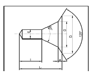
- A형
- B형
- C형
- D형
(정답률: 60%)
4. 절삭 날 부분을 특정한 형상으로 만들어 복잡한 면을 갖는 공작물의 표면을 한 번에 가공하는데 적합한 밀링 커터는?
- 총형 커터
- 엔드 밀
- 앵귤러 커터
- 플레인 커터
(정답률: 66%)
5. 일반적으로 직경(외경)을 측정하는 공구로써 가장 거리가 먼 것은?
- 강철자
- 그루브 마이크로미터
- 버니어 캘리퍼스
- 지시 마이크로미터
(정답률: 66%)
6. 절삭제의 사용 목적과 거리가 먼 것은?
- 공구의 온도상승 저하
- 가공물의 정밀도 저하방지
- 공구수명 연장
- 절삭 저항의 증가
(정답률: 84%)
7. 다음과 같이 표시된 연삭숫돌에 대한 설명으로 옳은 것은?
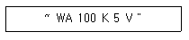
- 녹색 탄화규소 입자이다.
- 고운눈 입도에 해당된다.
- 결합도가 극히 경하다.
- 메탈 결합제를 사용했다.
(정답률: 61%)
8. 탁상 연삭기 덮개의 노출각도에서, 숫돌 주축 수평면 위로 이루는 원주의 최대 각은?
- 45°
- 65°
- 90°
- 120°
(정답률: 47%)
9. 사인 바(Sine bar)의 호칭 치수는 무엇으로 표시하는가?
- 롤러 사이의 중심거리
- 사인 바의 전장
- 사인 바의 중량
- 롤러의 직경
(정답률: 68%)
10. 절삭공구를 연삭하는 공구연삭기의 종류가 아닌 것은?
- 센터리스 연삭기
- 초경공구 연삭기
- 드릴 연삭기
- 만능공구 연삭기
(정답률: 64%)
11. 비교 측정에 사용되는 측정기가 아닌 것은?
- 다이얼 게이지
- 버니어 캘리퍼스
- 공기 마이크로미터
- 전기 마이크로미터
(정답률: 71%)
12. 선반가공에서
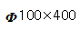
인 SM45C소재를 절삭 깊이 3mm, 이송속도를 0.2mm/rev, 주축 회전수를 400rpm으로 1회 가공할 때, 가공 소요시간은 약 몇 분인가?- 2
- 3
- 5
- 7
(정답률: 51%)
13. 수공구를 사용할 때 안전수칙 중 거리가 먼 것은?
- 스패너를 너트에 완전히 끼워서 뒤쪽으로 민다.
- 멍키렌치는 아래턱(이동 jaw) 방향으로 돌린다.
- 스패너를 연결하거나 파이프를 끼워서 사용하면 안 된다.
- 멍키렌치는 웜과 랙의 마모에 유의하고 물림상태 확인 후 사용한다.
(정답률: 60%)
14. 견고하고 금긋기에 적당하며, 비교적 대형으로 영점 조정이 불가능한 하이트 게이지로 옳은 것은?
- HT형
- HB형
- HM형
- HC형
(정답률: 56%)
15. 기계가공법에서 리밍 작업시 가장 옳은 방법은?
- 드릴 작업과 같은 속도와 이송으로 한다.
- 드릴 작업보다 고속에서 작업하고 이송을 작게 한다.
- 드릴 작업보다 저속에서 작업하고 이송을 크게 한다.
- 드릴 작업보다 이송만 작게하고 같은 속도로 작업한다.
(정답률: 56%)
16. 호브(hob)를 사용하여 기어를 절삭하는 기계로써, 차동 기구를 갖고 있는 공작기계는?
- 레이디얼 드릴링 머신
- 호닝 머신
- 자동 선반
- 호빙 머신
(정답률: 76%)
17. 밀링 머신에서 절삭속도 20m/min, 페이스커터의 날수 8개, 직경 120mm, 1날당 이송 0.2mm일 때 테이블 이송속도는?
- 약 65mm/min
- 약 75mm/min
- 약 85mm/min
- 약 95mm/min
(정답률: 55%)
18. 선반의 주축을 중공축으로 한 이유로 틀린 것은?
- 굽힘과 비틀림 응력의 강화를 위하여
- 긴 가공물 고정이 편리하게 하기 위하여
- 지름이 큰 재료의 테이퍼를 깎기 위하여
- 무게를 감소하여 베어링에 작용하는 하중을 줄이기 위하여
(정답률: 49%)
19. 연삭숫돌의 원통도 불량에 대한 주된 원인과 대책으로 옳게 짝지어진 것은?
- 연삭숫돌의 눈 메움 : 연삭숫돌의 교체
- 연삭숫돌의 흔들림 : 센터 구멍의 홈 조정
- 연삭숫돌의 입도가 거침 : 굵은 입도의 연삭숫돌 사용
- 테이블 운동의 정도 불량 : 정도검사, 수리, 미끄럼 면의 윤활을 양호하게 할 것
(정답률: 52%)
20. 일반적으로 방전가공 작업시 사용되는 가공액의 종류 중 가장 거리가 먼 것은?(오류 신고가 접수된 문제입니다. 반드시 정답과 해설을 확인하시기 바랍니다.)
- 변압기유
- 경유
- 등유
- 휘발유
(정답률: 66%)
2과목: 기계제도
21. 호칭번호가 "NA 4916 V"인 니들 롤러 베어링의 안지름 치수는 몇 mm인가?
- 16
- 49
- 80
- 96
(정답률: 79%)
22. 그림과 같이 가공된 축의 테이퍼 값은 얼마인가?
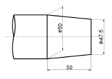
- 1/5
- 1/10
- 1/20
- 1/40
(정답률: 75%)
23. 지름이 60mm, 공차가 +0.001~+0.015인 구멍의 최대 허용 치수는?
- 59.85
- 59.985
- 60.15
- 60.015
(정답률: 80%)
24. 지름이 10cm이고, 길이가 20cm인 알루미늄 봉이 있다. 비중량이 2.7일 때, 중량(kg)은?
- 0.4242kg
- 4.242kg
- 42.42kg
- 4242kg
(정답률: 57%)
25. 이면 용접의 KS 기호로 옳은 것은?
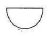
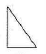
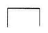
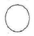
(정답률: 73%)
26. 전개도를 그리는데 다음 중 가장 중요한 것은?
- 투시도
- 축척도
- 도형의 중량
- 각부의 실제 길이
(정답률: 65%)
27. 그림은 필릿 용접 부위를 나타낸 것이다. 필릿 용접의∙목 두께를 나타내는 치수는?
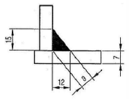
- 7
- 9
- 12
- 15
(정답률: 77%)
28. 그림과 같은 단면도의 형태는?
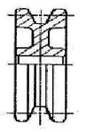
- 온 단면도
- 한쪽 단면도
- 부분 단면도
- 회전 도시 단면도
(정답률: 59%)
29. 핸들이나 바퀴 등의 암 및 리브, 훅, 축 등의 절단면을 나타내는 도시법으로 가장 적합한 것은?
- 계단 단면도
- 부분 단면도
- 한쪽 단면도
- 회전 도시 단면도
(정답률: 78%)
30. 제3각 투상법으로 정면도와 평면도를 그림과 같이 나타낼 경우 가장 적합한 우측면도는?
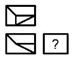
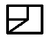
(정답률: 58%)
31. 그림과 같이 기하공차 기입 틀에서 “A"에 들어갈 기하공차기호는?
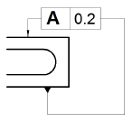
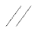
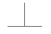
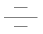
(정답률: 73%)
32. 보기와 같은 공차기호에서 최대실체 공차방식을 표시하는 기호는?
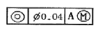
- ◎
- A
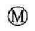
- ø
(정답률: 78%)
33. KS 재료기호 중 합금 공구강 강재에 해당하는 것은?
- STS
- STC
- SPS
- SBS
(정답률: 66%)
34. 제3각법으로 투상한 보기의 도면에 가장 적합한 입체도는?
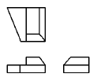
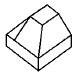
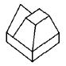
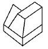
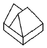
(정답률: 66%)
35. 그림과 같은 기호에서 “1.6” 숫자가 의미하는 것은?
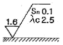
- 컷오프 값
- 기준길이 값
- 평가길이 표준값
- 평균 거칠기의 값
(정답률: 74%)
36. 그림과 같은 입체도에서 화살표 방향을 정면도로 할 경우에 우측면도로 가장 적절한 것은?
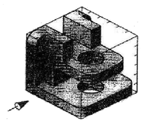
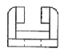
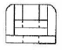
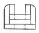
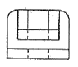
(정답률: 78%)
37. 표준 스퍼 기어의 항목표에서는 기입되지 아니하나 헬리컬기어 항목표에는 기입되는 것은?
- 모듈
- 비틀림 각
- 잇수
- 기준 피치원 지름
(정답률: 75%)
38. 제3각 정투상법으로 그린“(보기)”에 알맞은 우측면도는?
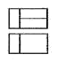
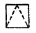
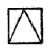
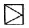
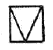
(정답률: 77%)
39. 그림과 같이 암나사를 단면으로 표시 할 때, 가는 실선으로 도시하는 부분은?
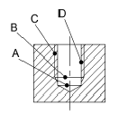
- A
- B
- C
- D
(정답률: 70%)
40. 일반 구조용 압연강재의 KS 재료기호는?
- SPS
- SBC
- SS
- SM
(정답률: 71%)
3과목: 기계설계 및 기계재료
41. 어떤 종류의 금속이나 합금을 절대영도 가까이 냉각하였을때, 전기저항이 완전히 소멸되어 전류가 감소하지 않는 상태는?
- 초소성
- 초전도
- 감수성
- 고상 접합
(정답률: 80%)
42. 풀림의 목적을 설명 한 것 중 틀린 것은?
- 강의 경도가 낮아져서 연화된다.
- 담금질된 강의 취성을 부여한다.
- 조직이 균일화, 미세화, 표준화 된다.
- 가스 및 불순물의 방출과 확산을 일으키고, 내부 응력을 저하시킨다.
(정답률: 52%)
43. 전연성이 좋고 색깔이 아름다우므로 장식용 악기 등에 사용되는 5~20% Zn 이 첨가된 구리합금은?
- 톰 백(tombac)
- 백동
- 6-4 황동 (muntz metal)
- 7-3황동 (cartridge brass)
(정답률: 79%)
44. 용광로의 용량으로 옳은 것은?
- 1회 선철의 총 생산량
- 10시간 선철의 총 생산량
- 1일 선철의 총 생산량
- 1개월 선철의 총 생산량
(정답률: 64%)
45. 18-8형 스테인리스강의 설명으로 틀린 것은?
- 담금질에 의하여 경화되지 않는다.
- 1000℃~1100℃로 가열하여 급랭하면 가공성 및 내식성이 증가된다.
- 고온으로부터 급랭한 것을 500℃~850℃로 재가열하면 탄화크롬이 석출된다.
- 상온에서는 자성을 갖는다.
(정답률: 57%)
46. 탄소강의 상태도에서 공정점에서 발생하는 조직은?
- Pearlite, Cementite
- Cementite, Austenite
- Ferrite, Cementite
- Austenite, Pearlite
(정답률: 48%)
47. 뜨임의 목적이 아닌 것은?
- 탄화물의 고용강화
- 인성 부여
- 담금질할 때 생긴 내부응력 감소
- 내마모성의 향상
(정답률: 51%)
48. 내열용 알루미늄 합금이 아닌 것은?
- Y합금
- 로엑스(Lo-Ex)
- 두랄루민
- 코비탈륨
(정답률: 49%)
49. 담금질한 강을 재가열할 때 600℃ 부근에서의 조직은?
- 솔바이트
- 마텐자이트
- 트루스타이트
- 오스테나이트
(정답률: 39%)
50. 주철용해용 고주파 유도 용해로(전기로)의 크기 표시는?
- 매 시간당 용해톤(ton)수
- 1일 총 용해톤(ton)수
- 1회 최대 용해톤(ton)수
- 8시간 조업 용해톤(ton)수
(정답률: 58%)
51. 다음 나사산의 각도 중 틀린 것은?
- 미터보통나사 60°
- 관용평행나사 55°
- 유니파이보통나사 60°
- 미터사다리꼴나사 35°
(정답률: 68%)
52. 너클 핀 이음에서 인장력이 50kN인 핀의 허용전단응력을 50MPa이라고 할 때, 핀의 지름 d는 몇 mm인가?
- 22.8
- 25.2
- 28.2
- 35.7
(정답률: 36%)
53. 보통운전으로 회전수 300rpm, 베어링하중 110N을 받는 단열레이디얼 볼 베어링의 기본 동정격하중은? (단, 수명은 6만 시간이고, 하중계수는 1.5이다.)
- 1693N
- 169.3N
- 1650N
- 165.0N
(정답률: 28%)
54. 1줄 리벳 겹치기 이음에서 강판의 효율( )을 나타내는 식은? (단, p : 리벳의 피치, d : 리벳구멍의 지름, t : 강판의 두께, бt : 강판의 인장응력이다.)
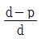
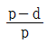
- ptбt
- (p-d)tбt
(정답률: 63%)
55. 어떤 축이 굽힘모멘트 M과 비틀림모멘트 T를 동시에 받고 있을 때, 최대 주응력설에 의한 상당 굽힘 모멘트 Me는?
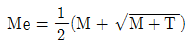
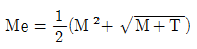
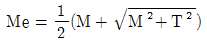
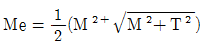
(정답률: 59%)
56. V 벨트의 사다리꼴 단면의 각도( )는 몇 도인가?
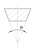
- 30°
- 35°
- 40°
- 45°
(정답률: 59%)
57. 자전거의 래칫휠에 사용되는 클러치는?
- 맞물림 클러치
- 마찰클러치
- 일방향 클러치
- 원심클러치
(정답률: 56%)
58. 축간거리 55cm인 평행한 두 축 사이에 회전을 전달하는 한쌍의 스퍼기어에서 피니언이 124회전할 때, 기어를 96회전 시키려면 피니언의 피치원 지름은?
- 48cm
- 62cm
- 96cm
- 124cm
(정답률: 27%)
59. 각속도가 30rad/sec인 원운동을 rpm단위로 환산하면 얼마인가?
- 157.1rpm
- 186.5rpm
- 257.1rpm
- 286.5rpm
(정답률: 22%)
60. 스프링의 자유높이 H와 코일의 평균지름 D의 비를 무엇이 라 하는가?
- 스프링 지수
- 스프링 변위량
- 스프링 상수
- 스프링 종횡비
(정답률: 56%)
4과목: 컴퓨터응용설계
61. CAD 데이터 교환 규격인 IGES에 대한 설명으로 틀린 것은?
- CAD/CAM/CAE 시스템 사이의 데이터 교환을 위한 최초의 표준이다.
- 한 개의 IGES 파일은 여섯 개의 섹션(section)으로 구성되어 있다.
- Directory Entry 섹션은 파일에서 정의한 모든 요소(entity)의 목록을 저장한다.
- 제품의 데이터 교환을 위한 표준으로서 CALS에서 채택되어 주목받고 있다.
(정답률: 55%)
62. 잉크젯 프린터 등의 해상도를 나타내는 단위는?
- LPM
- PPM
- DPI
- CPM
(정답률: 78%)
63. 솔리드 모델링에서 기본형상에 불리언 연산(boolean operation)을 적용하여 형상을 만드는 방법은?
- CGS
- Fairing
- B-Rep
- Remeshing
(정답률: 65%)
64. 심미적 곡면 중 단면이 안내곡선을 따라 이동하여 형성하는 형태의 곡면은?
- Sweep 곡면
- Grid 곡면
- Patch 곡면
- Blending 곡면
(정답률: 74%)
65. 반지름3, 중심점(6,7)인 원을 반지름 6, 중심점(8,4)의 원으로 변환하는 변환행렬로 알맞은 것은? (단, 변환 전, 후 원상의 점좌표는 동차좌표를 사용하여 각
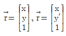
로 표시된다.)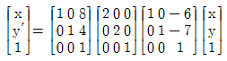
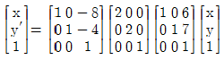
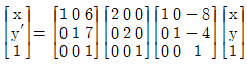
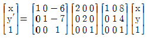
(정답률: 26%)
66. CSG 트리 자료구조에 대한 설명으로 틀린 것은?
- 자료구조가 간단해서 데이터 관리가 용이하다.
- 특히 리프팅이나 라운딩과 같이 편리한 국부변형 기능들을 사용하기에 좋다.
- CGS 표현은 항상 대응된 B-Rep 모델로 치환이 가능하다.
- 파라메트릭 모델링을 쉽게 구현할 수 있다.
(정답률: 37%)
67. 다음이 설명하는 것은 어떤 모델링 방식을 말하는가?
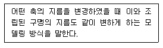
- 복셀 모델링
- 비 다양체 모델링
- B-Rep 모델링
- 조립체 모델링
(정답률: 63%)
68. 2차원 컴퓨터 그래픽스의 Window/Viewport변환을 위해 반드시 필요한 것이 아닌 것은?
- Window 중심점의 좌표
- Viewport 중심점의 좌표
- X 및 Y 방향의 변환각도
- X 및 Y 방향의 축척
(정답률: 47%)
69. 원점에 줌심이 있는 타원이 있는데 이 타원 위에 2개의 점P(x,y)가 각각 P1(2,0), P2(0,1) 있다고 할 때 이 점들을 지나는 타원의 식으로 옳은 것은?
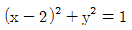
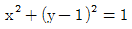
(정답률: 38%)
70. CAD 시스템에서 많이 사용한 Hermite 곡선 방정식에서 일반적으로 몇 차식을 많이 사용하는가?
- 1차식
- 2차식
- 3차식
- 4차식
(정답률: 69%)
71. 다음 중 원추면을 하나의 평면으로 절단할 때 얻을 수 있는 곡선(원추곡선)을 모두 고른 것은?
- ㉡,㉣
- ㉠,㉡,㉣
- ㉡,㉢,㉣
- ㉠,㉡,㉢,㉣
(정답률: 70%)
72. 비트(bit)에 대한 설명으로 틀린 것은?
- binary digit의 약자이다.
- 0 과 1을 동시에 나타내는 정보 단위이다.
- 2 진수로 표시된 정보를 나타내기에 알맞다.
- 컴퓨터에서 데이터를 나타내는 최소 단위이다.
(정답률: 62%)
73. 다음 중 원호를 정의하는 방법으로 틀린 것은?
- 시작점, 중심점, 각도를 지정
- 시작점, 중심점, 끝점을 지정
- 시작점, 중심점, 현의 길이를 지정
- 시작점, 끝점, 현의 길이를 지정
(정답률: 52%)
74. 솔리드 모델링의 특징에 관한 설명 중 틀린 것은?
- 은선 제거가 가능하다.
- 물리적 성질 등의 계산이 불가능하다.
- 간섭 체크가 용이하다.
- 와이어 프레임 모델링에 비해 데이터 처리양이 많다.
(정답률: 80%)
75. 3차 베지어 곡면을 정의하기 위하여 최소 몇 개의 점이 필요한가?
- 4
- 8
- 12
- 16
(정답률: 41%)
76. CAD 시스템으로 구축한 형상 모델에서 설계해석을 위한 각종 정보를 추출하거나, 추가로 필요로 하는 정보를 입력하고 편집하여 필요한 형식으로 재구성하는 소프트웨어 프로그램이나 처리절차를 뜻하는 용어는?
- Pre-processor
- Post-processor
- Multi-processor
- Multi-programming
(정답률: 56%)
77. 다음 중 B-Rep 모델링에서 토폴로지 요소간에 만족해야하는 오일러-푸앵카레 공식으로 옳은 것은? (단, V는 꼭지점의 개수, E는 모서리의 개수, F는 면 또는 외부 루프의 개수, H는 면상에 구멍 루프의 개수, C는 독립된 셀의 개수, G는 입체를 관통하는 구멍의 개수이다.)
- V + F + E + H = 2 ( C + G )
- V + F - E + H = 2 ( C + G )
- V + F - E - H = 2 ( C - G )
- V - F + E - H = 2 ( C - G )
(정답률: 49%)
78. 3차원 직교좌표계 상의 세점 A(1,1,1), B(2,2,3), C(5,1,4)가 이루는 삼각형에서 변 AB, AC가 이루는 각은 얼마인가?
(정답률: 28%)
79. 곡면 편집 기법 중 인접한 두 면을 둥근 모양으로 부드럽게 연결하도록 처리하는 것은?
- Fillet
- Smooth
- Mesh
- Trim
(정답률: 75%)
80. 다음 중 변환 행렬과 관계가 없는 것은?
- 이동
- 확대
- 회전
- 복사
(정답률: 67%)